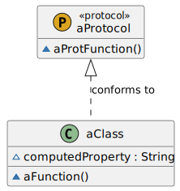

Reference
Reference
SwiftPlantUML
Generate UML class diagrams from swift code with this Command Line Interface (CLI) and Swift Package.


Use one or more Swift files as input for a diagram to visualize class, struct, protocol, enum and extension types
with their instance and static members as well as their inheritance and implementation relationships

Table of Contents (click to expand)
- [SwiftPlantUML](#swiftplantuml) - [Usage](#usage) - [Command Line](#command-line) - [Swift package](#swift-package) - [Xcode source editor extension](#xcode-source-editor-extension) - [Installation](#installation) - [Using Homebrew](#using-homebrew) - [Using Mint](#using-mint) - [Installing from source](#installing-from-source) - [Note: Working with Multiple Swift Versions](#note-working-with-multiple-swift-versions) - [Configuration](#configuration) - [Options](#options) - [Theming](#theming) - [Examples](#examples) - [Code Completion during Editing](#code-completion-during-editing) - [Large Diagrams](#large-diagrams) - [Generate UML documentation from a binary framework](#generate-uml-documentation-from-a-binary-framework) - [Planned improvements](#planned-improvements) - [Known limitations](#known-limitations) - [Logging](#logging) - [Manual page](#manual-page) - [Acknowledgements](#acknowledgements)Usage
Command Line
Example to generate and render diagram, based on a single Swift file, in your browser:
swiftplantuml ./Tests/SwiftPlantUMLFrameworkTests/TestData/basics.txt
Run swiftplantuml in the directory containing the Swift files to be considered for diagram generation. Directories
will be searched recursively.
$ swiftplantuml classdiagram --help
OVERVIEW: Generate PlantUML script and view it and diagram in browser
USAGE: swift-plant-uml classdiagram [--config <config>] [--exclude <exclude> ...] [--output <format>] [--sdk <sdk>] [--verbose] [<paths> ...]
ARGUMENTS:
<paths> List of paths to the files or directories containing
swift sources
OPTIONS:
--config <config> Path to custom configuration filed (otherwise will
search for `.swiftplantuml.yml` in current directory)
--exclude <exclude> paths to ignore source files. Takes precedence over
arguments
--output <format> Defines output format. Options: browser,
browserImageOnly, consoleOnly
--sdk <sdk> MacOSX SDK path used to handle type inference
resolution, usually `$(xcrun --show-sdk-path -sdk
macosx)`
--hide-extensions/--merge-extensions/--show-extensions
Decide if/how Swift extensions shall be considered for class diagram generation (default:
hideExtensions)
--verbose Verbose
--version Show the version.
-h, --help Show help information.
As classdiagram is the default subcommand you can omit it.
Note: unknown type in diagrams for variables declared with type inference (e.g. var hasBasket = false) unless you specify sdk argument
Type inference details (click to expand)
In the following example the property `hasBasket` is of type `Bool` but the type is inferred and not explicitly declared. “`swift class Bicycle: Vehicle { var hasBasket = false } ”` SwiftPlantUML requires the macosx SDK in order to properly recognize the inferred type. If you have Xcode installed (which includes the macosx SDK) then use `–sdk $(xcrun –show-sdk-path -sdk macosx)`. | | No inferred type (*default*) | inferred type | |——————–|——————-|———————–| | Generated PlantUML | `~hasBasket` | `~hasBasket : Bool` | Command | `swiftplantuml classdiagram Tests/SwiftPlantUMLFrameworkTests/TestData/demo.txt` | `swiftplantuml classdiagram Tests/SwiftPlantUMLFrameworkTests/TestData/demo.txt –sdk $(xcrun –show-sdk-path -sdk macosx)` | |Swift package
dependencies: [
.package(url: "https://github.com/MarcoEidinger/SwiftPlantUML.git", .upToNextMajor(from: "0.5.0"))
]
This project has yet to reach a major version. Anything may change at anytime, and the public API should not be considered stable. However, I’ll try to reserve breaking changes for new minor versions. You might feel more comfortable pinning the version to .upToNextMinor or even to an .exact version.
Xcode source editor extension
See MarcoEidinger/SwiftPlantUML-Xcode-Extension for more details
Installation
Using Homebrew
brew install swiftplantuml
previously you were able to use
brew install MarcoEidinger/formulae/swiftplantuml(and you still can)
Using Mint
$ mint install MarcoEidinger/SwiftPlantUML
Installing from source
You can also build and install from source by cloning this project and running
make install (Xcode 12 or later).
Manually Run the following commands to build and install manually:
$ git clone https://github.com/MarcoEidinger/SwiftPlantUML.git
$ cd SwiftPlantUML
$ make install
Note: Working with Multiple Swift Versions
SwiftPlantUML hooks into SourceKit and therefore needs a Swift toolschain.
You should always run SwiftPlantUML with the same toolchain you use to compile your code.
You may want to override SwiftPlantUML’s default Swift toolchain if you have multiple toolchains or Xcodes installed.
Here’s the order in which SwiftPlantUML determines which Swift toolchain to use:
$XCODE_DEFAULT_TOOLCHAIN_OVERRIDE$TOOLCHAIN_DIR or $TOOLCHAINSxcrun -find swift/Applications/Xcode.app/Contents/Developer/Toolchains/XcodeDefault.xctoolchain/Applications/Xcode-beta.app/Contents/Developer/Toolchains/XcodeDefault.xctoolchain~/Applications/Xcode.app/Contents/Developer/Toolchains/XcodeDefault.xctoolchain~/Applications/Xcode-beta.app/Contents/Developer/Toolchains/XcodeDefault.xctoolchain
sourcekitd.framework is expected to be found in the usr/lib/ subdirectory of the value passed in the paths above.
So if you encounter Fatal error: Loading sourcekitd.framework/Versions/A/sourcekitd failed then please check result of xcode-select -p to see if that directory subsequently contains a Swift toolschain. You can use sudo xcode-select -s <pathToYourXcodeInstallation> to rectify the situation, e.g.
sudo xcode-select -s /Applications/Xcode.app/Contents/Developer
Configuration
Configure SwiftPlantUML by adding a .swiftplantuml.yml file from the directory you’ll run SwiftPlantUML from. Note: the same configuration options can be set programmatically with Configuration.
Options
You can
- include/exclude files (wildcards supported)
- include/exclude elements by name (wildcards supported)
- limit elements and members based on their access level, e.g. show only
publictypes - hide extensions or merge extensions (with their known type)
| Show Extensions (Default) | Merge Extensions | Hide Extensions |
|---|---|---|
 |
 |
 |
| Clutter but represents codebase accurately | Reduced clutter. No loss of information | No clutter but loss of information |
- hide nested types
- hide member access level attribute
- configure styles, use skin parameters and even include external files or themes
- exclude inheritance relationships based on parent (wildcards supported), e.g. do not show inheritance to
Codable
Theming
| Default | Amiga | Reddress-darkblue | Sketchy Outline | Many More Available |
|---|---|---|---|---|
 |
 |
 |
See here for more examples |
Examples
Simple Example:
files:
exclude:
- "Tests/**/*.swift" # paths to ignore for diagram. Takes precedence over `included`.
elements:
havingAccessLevel:
- public
- open
showMembersWithAccessLevel:
- public
- open
showNestedTypes: false
showExtensions: merged
theme: plain # see https://plantuml.com/theme
texts:
title: |
<u>Formatted</u> title example
on <i>several</i> lines and using <font color=red>html</font>
skinparamCommands: # see https://plantuml.com/skinparam
- skinparam classBackgroundColor PaleGreen
- skinparam classArrowColor SeaGreen
- skinparam classBorderColor SpringGreen
- skinparam stereotypeCBackgroundColor YellowGreen
- skinparam stereotypeCBackgroundColor<< Foo >> DimGray
relationships:
inheritance:
label: "inherits from"
style:
lineStyle: dotted
lineColor: DarkViolet
textColor: DarkViolet
exclude:
- "Codable"
Rich example: here
Code Completion during Editing

To get code completion during editing use Visual Studio Code, the YAML extension created by Red Hat and the JSON schema for SwiftPlantUML.
In Visual Studio Code: Code -> Preferences -> Settings -> search for yaml

Click on Edit in settings.json and add the respective entry:
"yaml.schemas": {"https://raw.githubusercontent.com/MarcoEidinger/SwiftPlantUML/main/Configuration/Schema/json-schema-swiftplantuml.json": "/.swiftplantuml.yml" }
Large Diagrams
Online tools like PlantText do not support large diagrams. If your diagram image is incompletely rendered (or not visible at all) by PlantText in the browser then
- download PlantUML Java archive to your machine
- use
swiftplantumlto generate the script and - generate the actual image with
plantumllocally
Here is the respective command (which assumes that plantuml.jar was downloaded in the current directory from which swifptlantuml runs)
swiftplantuml ./Sources/ --output consoleOnly > sources.txt | java -DPLANTUML_LIMIT_SIZE=8192 -jar plantuml.jar $1
This will result in the creation of sources.png file containing the class diagram up to the size limit.
PlantUML limits image width and height to 4096 with the option to override this limit (-DPLANTUML_LIMIT_SIZE) of which I made use in the command above.
In the table below you see the difference of class diagram output based on the same script. FYI: this script/diagram has 63 entities.
| PlantText Output | PlantUML Output (Default Size Limit) | PlantUML Output (Custom Size Limit) |
|---|---|---|
 |
 |
 |
Generate UML documentation from a binary framework
You can use swifplantuml to parse the .swiftmodule file of a binary framework, for details and a concrete example please read my article Generate UML documentation from a binary framework (xcframework).
Planned improvements
- being able to render associations between elements
Known limitations
See Large Diagrams
Logging
CLI will log only error messages per default.
To log messages with lower priority (warning, info, debug) use the --verbose option.
Note: using --output consoleOnly, to print the PlantUML script in the console, will log any messages into a log file. This has the advantage that you can pipe the PlantUML script into a file without problems. You can tail the log file with tail -f /tmp/swiftplantuml.log
Manual page
Installing swiftplantuml with Homebrew or from source (make install) will also install a man page which you can view with:
man swiftplantuml

Acknowledgements
This project was inspired by https://github.com/palaniraja/swiftuml and its various predecessors. Out of personal preference I chose to start a new project. I wanted to provide a tool for Swift developers written in Swift! This will hopefully allow me and potential contributors to work on planned improvements faster and more efficient.
Last but not least a big shoutout to the great developers of PlantUML and the people who operate the related online servers / tools available on http://plantuml.com/ and https://www.planttext.com/